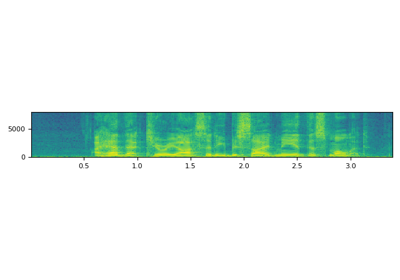
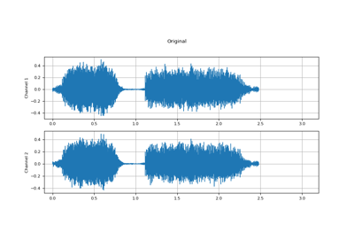

AudioEffector¶
- class torchaudio.io.AudioEffector(effect: Optional[str] = None, format: Optional[str] = None, *, encoder: Optional[str] = None, codec_config: Optional[CodecConfig] = None, pad_end: bool = True)[source]¶
Apply various filters and/or codecs to waveforms.
New in version 2.1.
- Parameters:
effect (str or None, optional) – Filter expressions or
Noneto apply no filter. See https://ffmpeg.org/ffmpeg-filters.html#Audio-Filters for the details of filter syntax.format (str or None, optional) – When provided, encode the audio into the corresponding format. Default:
None.encoder (str or None, optional) – When provided, override the encoder used by the
format. Default:None.codec_config (CodecConfig or None, optional) – When provided, configure the encoding codec. Should be provided in conjunction with
formatoption.pad_end (bool, optional) – When enabled, and if the waveform becomes shorter after applying effects/codec, then pad the end with silence.
- Example - Basic usage
To use
AudioEffector, first instantiate it with a set ofeffectandformat.>>> # instantiate the effector >>> effector = AudioEffector(effect=..., format=...)
Then, use
apply()orstream()method to apply them.>>> # Apply the effect to the whole waveform >>> applied = effector.apply(waveform, sample_rate)
>>> # Apply the effect chunk-by-chunk >>> for chunk in effector.stream(waveform, sample_rate): >>> ...
- Example - Applying effects
Please refer to https://ffmpeg.org/ffmpeg-filters.html#Filtergraph-description for the overview of filter description, and https://ffmpeg.org/ffmpeg-filters.html#toc-Audio-Filters for the list of available filters.
Tempo - https://ffmpeg.org/ffmpeg-filters.html#atempo
>>> AudioEffector(effect="atempo=1.5")
Echo - https://ffmpeg.org/ffmpeg-filters.html#aecho
>>> AudioEffector(effect="aecho=0.8:0.88:60:0.4")
Flanger - https://ffmpeg.org/ffmpeg-filters.html#flanger
>>> AudioEffector(effect="aflanger")
Vibrato - https://ffmpeg.org/ffmpeg-filters.html#vibrato
>>> AudioEffector(effect="vibrato")
Tremolo - https://ffmpeg.org/ffmpeg-filters.html#tremolo
>>> AudioEffector(effect="vibrato")
You can also apply multiple effects at once.
>>> AudioEffector(effect="")
- Example - Applying codec
One can apply codec using
formatargument.formatcan be audio format or container format. If the container format supports multiple encoders, you can specify it withencoderargument.Wav format (no compression is applied but samples are converted to 16-bit signed integer)
>>> AudioEffector(format="wav")
Ogg format with default encoder
>>> AudioEffector(format="ogg")
Ogg format with vorbis
>>> AudioEffector(format="ogg", encoder="vorbis")
Ogg format with opus
>>> AudioEffector(format="ogg", encoder="opus")
Webm format with opus
>>> AudioEffector(format="webm", encoder="opus")
- Example - Applying codec with configuration
Reference: https://trac.ffmpeg.org/wiki/Encode/MP3
MP3 with default config
>>> AudioEffector(format="mp3")
MP3 with variable bitrate
>>> AudioEffector(format="mp3", codec_config=CodecConfig(qscale=5))
MP3 with constant bitrate
>>> AudioEffector(format="mp3", codec_config=CodecConfig(bit_rate=32_000))
- Tutorials using
AudioEffector: - AudioEffector UsagesAudio Data Augmentation
Methods¶
apply¶
- AudioEffector.apply(waveform: Tensor, sample_rate: int, output_sample_rate: Optional[int] = None) Tensor[source]¶
Apply the effect and/or codecs to the whole tensor.
- Parameters:
waveform (Tensor) – The input waveform. Shape:
(time, channel)sample_rate (int) – Sample rate of the input waveform.
output_sample_rate (int or None, optional) – Output sample rate. If provided, override the output sample rate. Otherwise, the resulting tensor is resampled to have the same sample rate as the input. Default:
None.
- Returns:
Resulting Tensor. Shape:
(time, channel). The number of frames could be different from that of the input.- Return type:
Tensor
stream¶
- AudioEffector.stream(waveform: Tensor, sample_rate: int, frames_per_chunk: int, output_sample_rate: Optional[int] = None) Iterator[Tensor][source]¶
Apply the effect and/or codecs to the given tensor chunk by chunk.
- Parameters:
waveform (Tensor) – The input waveform. Shape:
(time, channel)sample_rate (int) – Sample rate of the waveform.
frames_per_chunk (int) – The number of frames to return at a time.
output_sample_rate (int or None, optional) – Output sample rate. If provided, override the output sample rate. Otherwise, the resulting tensor is resampled to have the same sample rate as the input. Default:
None.
- Returns:
Series of processed chunks. Shape:
(time, channel), where the the number of frames matchesframes_per_chunkexcept the last chunk, which could be shorter.- Return type:
Iterator[Tensor]